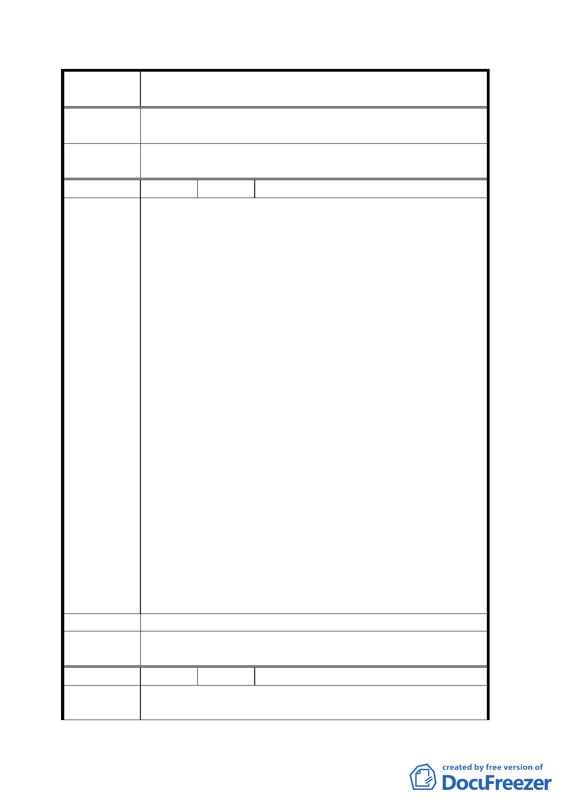

案
名
變更臺北市文山區萬隆段二小段瀝青拌合場用地及住宅區
（專案國宅用地）為學校用地計畫案
有堅持反對變更為學校用地別無他途；敬祈駁回需地機關
所請。
擬建議處理
意見
同意撤回計畫案。
編 號 １０ 陳情人 張耿暉理事長（連署人二十四人）
一、需地機關（教育局）未有專家「評估報告」即作粗糙
決策，讓里民無法信服，堅決反對設本社區。
二、需地機關先前承諾再辦「說明會」、里民意見調查，卻
跳票失信於民，缺乏「誠信」的政府之有逼民反對到
底。
三、文心中學係收容違反「少年性交易防制法」而
被法院判決管制者，依教育的立場，其學校應
設於山明水秀環境幽雅且區為較為獨立的地
方，學生亦較能安於受教導正而學校也便於管
陳情理由
理。環顧係爭標的，位於環快匝道下方噪音充
斥，四面盡是灰色泥牆，若設於此環境，定難
收教育導正成效，浪費四億公帑。
四、本社區人口密度每平方公里 213116 人，係屬高密度住
宅區，而目前有設立中途學校之縣市，諸如高雄瑞平
中學、新竹縣誠正中學等都在較偏遠區，以瑞平中學
為例，其所處楠梓區人口密度僅 5000 人，與本社區相
較，其差甚遠；里民生活品質、不動產價額受其影響
甚鉅；安全亦因其設立而所威脅之虞；因未見該校管
理辦法出爐，人民有免於恐懼之自由，堅決抗議。
五、為該都市計畫變更說明會里民之陳情、社區實情及社
區權益能上達都市計畫評議委員會。
建 議 辦 法 請駁回本案。
擬建議處理
意見
同意撤回計畫案。
編 號 １１ 陳情人 謝立亭
陳情理由
一、計畫案由教育局逾 91 年 10 月 15 日北市教二字第
09138149400 號公文通知地區民眾逾 91 年 10 月 21 日
一○